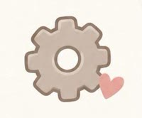
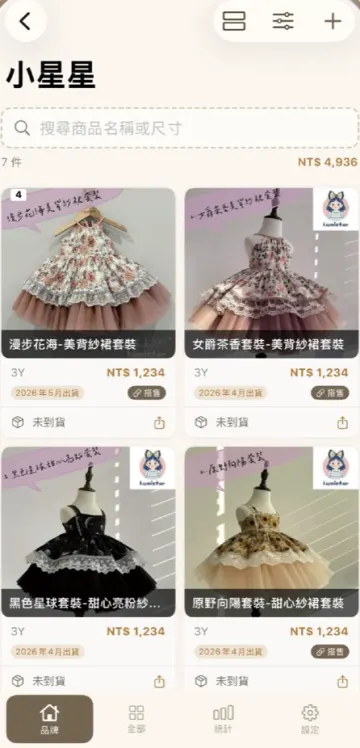
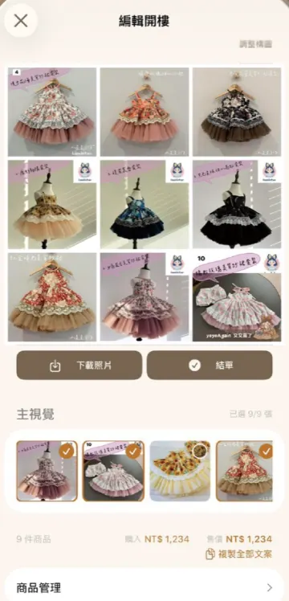
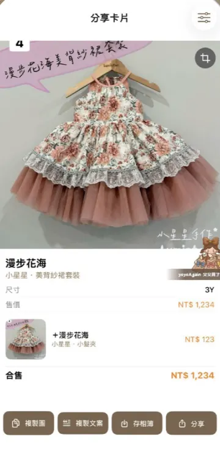
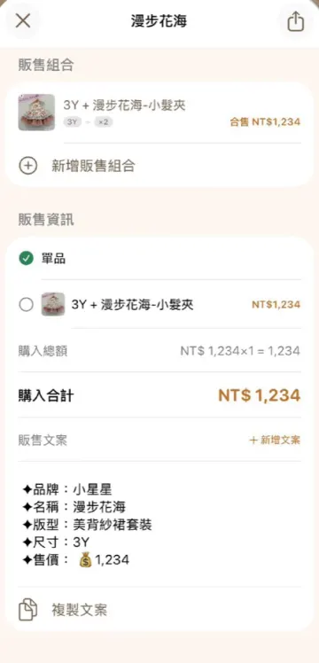

截圖匯入
購物訂單、FB 社團或 LINE 群組的團購貼文截圖丟進來，自動抓出名稱、價格、尺寸，不用一筆一筆打。 看更多 →
衣櫃黑洞
救星來了
奇怪！！我到底又又買了什麼？
美衣、髮飾、鞋子、玩具⋯
小孩的東西就是會一直買啊～
又又買了幫你把童裝一件一件記下來，
尺寸、花費、到貨都清楚，衣櫃整理不再頭痛。

又又買了可以幫你
購物訂單、FB 社團或 LINE 群組的團購貼文截圖丟進來，自動抓出名稱、價格、尺寸，不用一筆一筆打。 看更多 →
官方照、實品照、穿拍照、購證分開放，要賣的時候一秒找到。 看更多 →
二手童裝要轉售？分享卡片自動排好照片、尺寸、物況和價格，文案連出貨方式（像賣貨便免運）都幫你寫好，複製貼上馬上賣。 看更多 →
好幾件想要一起賣？選好要賣的物品，封面照、文案和金額一鍵幫你整理好。 看更多 →
洋裝配髮夾、上衣配褲子，怎麼搭都行，合售價格和文案自動算好。 看更多 →
把衣服排進行事曆，每天要穿什麼一目瞭然，讓你的美衣都能被穿到。 看更多 →
童裝買了多少、賣了多少，這個月存入、到貨、結帳的物品全部整理給你看。 看更多 →
還沒買到的先記起來，徵文文案幫你產好，馬上徵馬上買到。 看更多 →
同一款買了好幾個尺寸也能分開記，照品牌、尺寸、版型分好，要找哪一件，搜尋一下就有。 看更多 →
團購收單、手作排單，結帳月份和到貨月份記下來，哪些還沒到一看就知道。 看更多 →
孩子衣服分開放，每個人有自己的衣櫃，還能再分抽屜；暫時不想看的收起來，清單馬上清爽。 看更多 →

資料存在你自己的 iCloud，換手機登入同一個 Apple ID 就回來，也能匯出完整備份。 看更多 →
實際畫面




截圖中的美衣感謝「Lumistar 小星星手作訂製樂園」授權
價格均為示意。

Q&A
又又買了是專門給媽媽用的童裝 App（iPhone 版）。
童裝買了什麼、哪個尺寸、花多少錢都能記下來，訂單或社團貼文截圖丟進來會自動抓資料；團購、手作的到貨月份一看就知道。
要把二手童裝轉售出去時，分享卡片和販售文案一鍵產好，開樓、搭售金額也幫你算。
免費下載就能用！
有需要更多進階功能的話，也可以升級 Pro，首月免費試用喲！看方案比較 →
資料僅會存在你自己的 iPhone 和 iCloud，開發者看不到你的任何資料。
不然我會好羨慕啊～看隱私權政策 →
預設會透過 iCloud 同步，新手機登入同一個 Apple ID、打開 App 就會回來。
如果有關掉雲端同步，記得先在 App 裡匯出完整備份，再到新手機匯入喔。
可以。
到 iPhone 的「設定 › Apple ID › 訂閱項目」就能取消，取消後仍可使用到這一期結束。
目前先推出 iPhone 版
Android 版正在努力跑跑中～
推出時會在 Threads 公告，記得來找我們